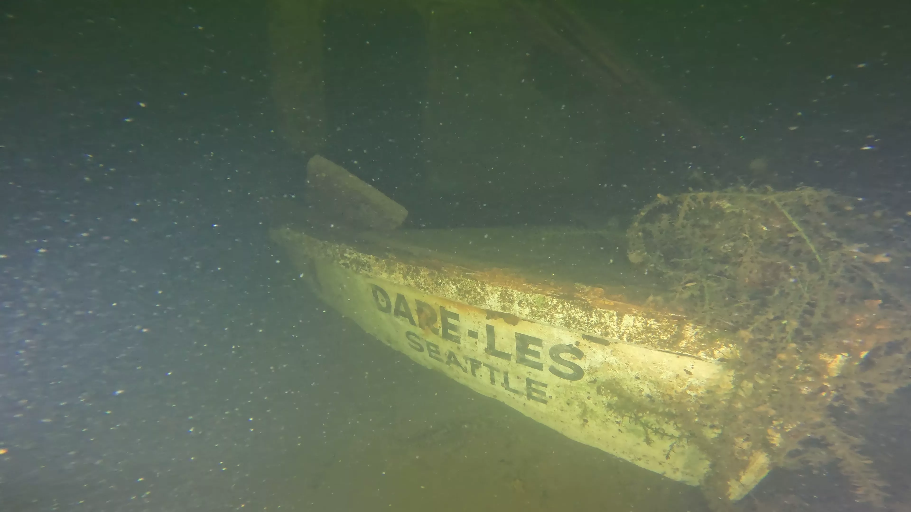

All documented targets, from shipwrecks to cars to oil drums. Click on a target to view history, photos, and dive videos.
| ID# | Name | Type | Depth | Status | |
|---|---|---|---|---|---|
| #LU001 | Wooden Barge | Vessel | 35 ft | Recently Explored | |
| #LU002 | Wood Structure | Infrastructure | 35 ft | Recently Explored | |
| #LU003 | The Old Barge | Vessel | 35 ft | Recently Explored | |
| #LU004 | Metal Frame | Infrastructure | 35 ft | Recently Explored | |
| #LU005 | Wooden Boat | Vessel | 40 ft | Recently Explored | |
| #LU006 | LCVP PA 201-8/9 | Vessel | 40 ft | Recently Explored | |
| #LU007 | Foss 54 (YC 191) | Vessel | 15 ft | Recently Explored | |
| #LU008 | Irene | Vessel | 40 ft | Recently Explored | |
| #LU009 | Landing Craft | Vessel | 40 ft | Recently Explored | |
| #LU010 | Small Work Barge | Vessel | 40 ft | Recently Explored | |
| #LU011 | Debris Field | Debris | 40 ft | Recently Explored | |
| #LU012 | Kahlenberg | Vessel | 40 ft | Recently Explored | |
| #LU013 | Shipwreck | Undetermined | 40 ft | Never Explored | |
| #LU014 | Shipwreck | Undetermined | 40 ft | Never Explored | |
| #LU015 | Wood Boat / Tug | Vessel | 40 ft | Previously Explored | |
| #LU016 | Shipwreck | Undetermined | 40 ft | Never Explored | |
| #LU017 | Karinda | Vessel | 40 ft | Previously Explored | |
| #LU018 | HI-YU-ALL | Vessel | 40 ft | Previously Explored | |
| #LU019 | Wood Cruiser | Vessel | 40 ft | Previously Explored | |
| #LU020 | Possible Barge | Undetermined | 30 ft | Never Explored | |
| #LU021 | Steel Workboat | Vessel | 30 ft | Recently Explored | |
| #LU022 | Metal Fire Boat | Vessel | — | Previously Explored | |
| #LU023 | Small Wood Barge | Vessel | 30 ft | Previously Explored | |
| #LU024 | Bowspirit Boat | Vessel | 40 ft | Recently Explored | |
| #LU025 | Log Pile | Debris | 40 ft | Recently Explored | |
| #LU026 | ***Quinn II | Vessel | 40 ft | Recently Explored | |
| #LU027 | Possible Sidewheeler | Vessel | — | Previously Explored | |
| #LU028 | Draft Marker Boat | Vessel | 40 ft | Recently Explored | |
| #LU029 | Metal Box Frame | Infrastructure | 40 ft | Recently Explored | |
| #LU030 | Sailboat | Vessel | 40 ft | Previously Explored | |
| #LU031 | Metal Boat | Vessel | 40 ft | Previously Explored | |
| #LU032 | Wood Barge | Vessel | 40 ft | Recently Explored | |
| #LU033 | Collapsed Wooden Boat | Vessel | 40 ft | Recently Explored | |
| #LU034 | Personal Liveaboad | Debris | 30 ft | Previously Explored | |
| #LU035 | Jeanette | Vessel | — | Previously Explored | |
| #LU036 | Debris Field | Debris | 40 ft | Recently Explored | |
| #LU037 | Debris Field | Debris | 40 ft | Recently Explored | |
| #LU038 | USS Lapeer (PC 1138) | Vessel | 40 ft | Previously Explored | |
| #LU039 | Debris | Undetermined | 40 ft | Never Explored | |
| #LU040 | Sternwheeler | Vessel | 30 ft | Previously Explored | |
| #LU041 | Sea Bee | Vessel | — | Previously Explored | |
| #LU042 | JE Boyden | Vessel | 40 ft | Recently Explored | |
| #LU043 | Log and Standing Wood | Debris | 40 ft | Recently Explored | |
| #LU044 | Long Log | Debris | 40 ft | Recently Explored | |
| #LU045 | Collapsed Wooden Boat | Vessel | 40 ft | Recently Explored | |
| #LU046 | Bicycle and Scooter (Previous Buick Site) | Undetermined | — | Never Explored | |
| #LU047 | Possible Shipwreck | Undetermined | 40 ft | Never Explored | |
| #LU048 | Barrel and Floating Rope | Debris | 40 ft | Recently Explored | |
| #LU049 | Possible Shipwreck | Undetermined | — | Never Explored | |
| #LU050 | Possible Shipwreck | Undetermined | 40 ft | Never Explored | |
| #LU051 | Possible Shipwreck | Undetermined | 40 ft | Never Explored | |
| #LU052 | Small Metal Chest | Debris | 40 ft | Recently Explored | |
| #LU053 | Pilings | Debris | 40 ft | Recently Explored | |
| #LU054 | Debris Field | Debris | 40 ft | Recently Explored | |
| #LU055 | Shipwreck | Undetermined | 40 ft | Never Explored | |
| #LU056 | Shipwreck | Vessel | 40 ft | Previously Explored | |
| #LU057 | Shipwreck(s) Debris Field | Undetermined | 40 ft | Never Explored | |
| #LU058 | Barge | Undetermined | 40 ft | Never Explored | |
| #LU059 | Shipwreck | Undetermined | 40 ft | Never Explored | |
| #LU060 | Cables, Tires, Drums | Undetermined | 40 ft | Never Explored | |
| #LU061 | Debris | Undetermined | — | Never Explored | |
| #LU062 | Gypsy Queen (YMS105) | Vessel | 40 ft | Previously Explored | |
| #LU063 | Wooden Sloop | Vessel | — | Previously Explored | |
| #LU064 | Wooden Pleasure Craft ( ___ANN) | Vessel | 40 ft | Previously Explored | |
| #LU065 | Cannery Tender | Vessel | 40 ft | Previously Explored | |
| #LU066 | Previous Harley Davidson Site | Vessel | 15 ft | Recently Explored | |
| #LU067 | Likely Barge | Undetermined | 40 ft | Never Explored | |
| #LU068 | Likely Barge | Undetermined | 40 ft | Never Explored | |
| #LU069 | Collapsed Wooden Boat | Vessel | 40 ft | Recently Explored | |
| #LU070 | Ladder Debris Field | Undetermined | 40 ft | Never Explored | |
| #LU071 | Pleasure Craft | Vessel | 40 ft | Recently Explored | |
| #LU072 | Debris | Undetermined | 40 ft | Never Explored | |
| #LU073 | Possible Airplane Drop Tank | Debris | 40 ft | Recently Explored | |
| #LU074 | Bulwarks Boat | Vessel | 4 ft | Recently Explored | |
| #LU075 | Wooden Debris | Debris | 40 ft | Recently Explored | |
| #LU076 | DARE-LES (WN 3986 D) | Vessel | 40 ft | Recently Explored | |
| #LU077 | Small Wooden Boat | Vessel | 40 ft | Recently Explored | |
| #LU078 | Betty W. | Vessel | 40 ft | Recently Explored | |
| #LU079 | Debris field | Debris | 40 ft | Recently Explored | |
| #LU080 | Debris field | Debris | 40 ft | Recently Explored | |
| #LU081 | Small Metal Boat with Docks | Vessel | — | Recently Explored | |
| #LU082 | Work Boat | Vessel | 35 ft | Recently Explored | |
| #LU083 | Small Wood Barge | Vessel | 20 ft | Recently Explored | |
| #LU084 | Metal Barge | Vessel | 30 ft | Recently Explored | |
| #LU085 | Gypsy Trader | Vessel | 40 ft | Previously Explored | |
| #LU086 | Small Wooden Boat | Vessel | 40 ft | Recently Explored | |
| #LU087 | Kayak (Resonance Brand) | Vessel | 40 ft | Recently Explored | |
| #LU088 | Possible Sailboat | Undetermined | 40 ft | Never Explored | |
| #LU089 | Debris field | Debris | 40 ft | Recently Explored | |
| #LU090 | Shipwreck | Undetermined | 40 ft | Never Explored | |
| #LU091 | Shipwreck | Undetermined | 40 ft | Never Explored | |
| #LU092 | Shipwreck | Undetermined | 40 ft | Never Explored | |
| #LU093 | Shipwreck | Undetermined | 40 ft | Never Explored | |
| #LU094 | Fiberglass Rowboat | Vessel | 40 ft | Recently Explored | |
| #LU095 | Wooden Boat | Vessel | 40 ft | Recently Explored | |
| #LU096 | Fiberglass Boat (WN 7352 JD) | Vessel | 40 ft | Recently Explored | |
| #LU097 | Cables | Debris | 20 ft | Recently Explored | |
| #LU098 | Pleasure Craft | Vessel | 23 ft | Recently Explored | |
| #LU099 | Onondaga (Arctic Explorer, WPG-79) | Vessel | 4 ft | Recently Explored | |
| #LU100 | Cruising Vessel | Vessel | — | Recently Explored | |
| #LU101 | Cruising Vessel | Vessel | — | Recently Explored | |
| #LU102 | Car Wreck (V6) | Vessel | — | Recently Explored | |
| #LU103 | Smalll Wooden Boat | Vessel | — | Recently Explored | |
| #LU104 | Small Dock | Infrastructure | — | Recently Explored | |
| #LU105 | Barge and Trailer (The Dump) | Debris | — | Recently Explored | |
| #LU106 | Wooden Wreck | Vessel | 3 ft | Recently Explored | |
| #LU107 | Small Wooden Boat | Vessel | — | Previously Explored | |
| #LU108 | Tree Trunks | Debris | — | Previously Explored | |
| #LU109 | Geological Feature | Geology | — | Recently Explored | |
| #LU110 | Car Wreck | Vessel | — | Recently Explored | |
| #LU111 | Small Wood Dock | Infrastructure | — | Recently Explored | |
| #LU112 | Logs | Debris | — | Recently Explored |
The master archive is maintained as a structured CSV spreadsheet and updated as new data is available. It includes all survey data, source references, footage status, and field notes for every cataloged target in Lake Union and connected waterways.
The Archive Dataset has not been fully verified and is a working document with inaccuracies. At the end of the document, it will be reviewed for accuracy and officially released.
Download CSV| Field | Description |
|---|---|
| Target Identity | |
| target_no | Unique catalog number (e.g. LU001). Assigned sequentially from the CSS sonar survey baseline. |
| target_name | Known vessel name, if positively identified. Nicknames indicated with '***'. Otherwise Unknown. |
| type | General vessel category (Shipwreck, Debris, Infrastructure, Vehicle, or Unknown). |
| subtype | More specific classification where known (e.g. Landing Craft, Sailboat, Dock section). |
| material | Hull construction material (Wood, Metal, Fiberglass, Unknown, etc.). |
| Location & Physical | |
| longitude | GPS coordinate in decimal degrees (WGS84). Derived from sonar survey centroid. |
| latitude | GPS coordinate in decimal degrees (WGS84). Derived from sonar survey centroid. |
| depth_ft | Depth to wreck in feet, measured at the shallowest point of the hull. |
| dimensions_ft | Estimated length × beam (width) in feet. Diver measurements or side scan estimate (where both are available, diver taken as truth). ROV surveys did not contribute to dimensions. |
| target_description | Brief free-text summary description of the target. |
| Coastal Sensing and Survey (High-Resolution Side Scan Survey) | |
| css_surveyed | Whether this target appeared in the CSS side-scan sonar survey of Lake Union. |
| css_survey_date | Date the CSS sonar survey was conducted for this target. |
| css_dimensions | Dimensions as measured from CSS sonar data. |
| css_historically_explored | Whether CSS records indicate prior historical exploration of this target (CSS themselves only explored JE Boyden with an ROV). |
| css_description | These are the original target names from the CSS survey log. |
| css_url | Link to the CSS public survey record for this target. |
| DCS Films (Scuba Dive Records) | |
| dcs_target_no | DCS Films' internal target reference number, where applicable. |
| dcs_scuba_footage | Whether DCS Films captured scuba dive footage of this target. |
| dcs_scuba_date | Date DCS Films conducted their scuba dive on this target. |
| dcs_dimensions | Dimensions recorded by DCS divers during in-water survey. The values are considered more accurate than side scan measurement. |
| dcs_notes | Notes of names and dimensions from start of DCS Films videos (more information exists at their url). |
| dcs_url | Link to DCS Films footage and/or historical documentation for this target. |
| Shipwreck City (ROV Dives) | |
| sc_current_footage_status | Current exploration status: No Footage (no public footage is available or known), Historical Footage (footage available from DCS or other source), Updated Footage (SC completed an ROV dive to update Historical Footage), First Footage (SC completed an ROV dive where no footage was available).. |
| sc_initial_footage_status | Footage status before Shipwreck City involvement — establishes the baseline before work started. |
| sc_newly_uncovered | Yes if this target was not present in any prior survey and was first logged by the Shipwreck City effort. |
| sc_rov_dive_duration | Duration of Shipwreck City ROV dive in hours. |
| sc_rov_dive_date | Date of the Shipwreck City ROV dive. |
| sc_notes | Shipwreck City field notes, observations, and identification context. |
| sc_url | Link to Shipwreck City footage or documentation for this target. |
| sc_howto_access | Nearest access point to visit target (Specific marina or via Boat). |